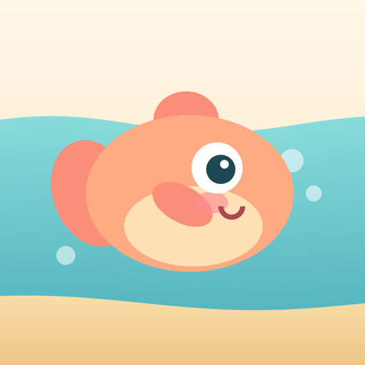

// IN DEVELOPMENT · iOS & ANDROIDW BUDOWIE · iOS I ANDROID

Sippo.
A calm water habit that grows a living aquarium. Log a glass, meet Pip and let the little world fill up at your own pace.Spokojny nawyk picia wody, który rozrasta żywe akwarium. Dodaj szklankę, poznaj Pipa i pozwól małemu światu wypełniać się we własnym tempie.
Most habit apps count numbers. Sippo turns each glass into water in a small aquarium, so progress feels like a place, not a score.Większość aplikacji liczy liczby. Sippo zamienia każdą szklankę w wodę w małym akwarium, więc postęp jest miejscem, a nie wynikiem.
01
One tapJedno dotknięcie
Pick a portion and log it. The day journal keeps the time and amount, and you can change today’s entry later.Wybierz porcję i dodaj ją. Dziennik dnia zapisuje godzinę i ilość, a dzisiejszy wpis możesz później zmienić.
02
A living worldŻywy świat
Every glass raises the water. Plants, creatures, decorations and themes arrive with days at your goal, and Pip reacts when you log a drink.Każda szklanka podnosi wodę. Rośliny, stworki, dekoracje i motywy przychodzą za dni z celem, a Pip reaguje na dodany napój.
03
Your own paceWłasne tempo
A quiet day only makes the aquarium sleepier: water evaporates and Pip rests. The creature never dies, and nothing scolds you.Spokojny dzień tylko usypia akwarium: woda paruje, a Pip odpoczywa. Stworek nigdy nie umiera i nic Cię nie strofuje.
02 · A LOOK INSIDEZAJRZYJ DO ŚRODKA
What it feels like.Jak to wygląda.
Screenshots from a development build. Tap one to enlarge it.Zrzuty z wersji w budowie. Dotknij, aby powiększyć.
// THE AQUARIUMAKWARIUM
The aquarium is the progress barAkwarium jest paskiem postępu
The water level follows what you log. Reach your goal and Pip celebrates; come back after a quiet day and the world is a little smaller, never broken.Poziom wody zależy od tego, co dodasz. Osiągnij cel i Pip świętuje; wróć po spokojnym dniu, a świat będzie trochę mniejszy, ale nigdy zepsuty.
Pip, more creatures, plants, decorations and themes to unlockPip, kolejne stworki, rośliny, dekoracje i motywy do odblokowania
A calm animation that respects the reduced-motion settingSpokojna animacja, która respektuje ograniczenie ruchu
No death, no decay you have to repair, no lost progressBez śmierci, bez naprawiania zniszczeń i bez utraty postępu
// HISTORY & JOURNALHISTORIA I DZIENNIK
A week you can readTydzień, który da się przeczytać
A seven-day chart with your goal line, a day journal with times and portions, and a calendar for the month. Nothing is hidden behind a score.Wykres siedmiu dni z linią celu, dziennik z godzinami i porcjami oraz kalendarz miesiąca. Nic nie chowa się za jednym wynikiem.
Streak, best streak and days with the goalSeria, najlepsza seria i dni z celem
Tap a day to see its total, journal and a saved goal that changed over timeDotknij dnia, aby zobaczyć sumę, dziennik i zapisany cel, który zmieniał się w czasie
Change or remove today’s entry after the undo windowZmiana lub usunięcie dzisiejszego wpisu po upływie okna cofania
// REWARDSNAGRODY
Rewards, not a grindNagrody, nie grind
Everything unlocks with days at your goal. There are no coins, no shortcuts and no mini-games; the aquarium is the reward.Wszystko odblokowuje się za dni z celem. Nie ma monet, skrótów ani mini-gier; nagrodą jest akwarium.
Preview an item in your own aquarium before placing itPodejrzyj element we własnym akwarium, zanim go wstawisz
One creature, one extra plant, one decoration and one theme at a timeJedna extra roślina, jedna dekoracja i jeden motyw naraz, plus wybrany stworek
Free items and optional Premium items share the same progress rulesDarmowe i opcjonalne rzeczy z Premium działają na tych samych zasadach postępu
03 · GENTLE BY DESIGNSPOKOJNIE Z ZAŁOŻENIA
Less pressure.Mniej presji.
01
Reminders that fitPrzypomnienia, które pasują
Set a window and quiet hours, add a morning nudge or your own daily ritual, and snooze for 30 minutes from the notification. Reminders never block anything.Ustaw okno i ciszę nocną, dodaj poranne przypomnienie albo własny rytuał dnia i odrocz o 30 minut z powiadomienia. Przypomnienia nigdy niczego nie blokują.
02
Premium is optionalPremium jest opcjonalne
Premium adds more creatures, plants, decorations and themes, plus the full history. Adding water and reminders always stay free, with no ads anywhere.Premium dodaje kolejne stworki, rośliny, dekoracje i motywy oraz całą historię. Dodawanie wody i przypomnienia zawsze zostają bezpłatne, a reklam nie ma nigdzie.
03
Private by defaultPrywatnie domyślnie
No account. Drinking data stays on your phone. Analytics is off unless you turn it on, and purchases are handled by the App Store or Google Play.Bez konta. Dane o piciu zostają na telefonie. Analityka jest wyłączona, dopóki jej nie włączysz, a zakupy obsługuje App Store albo Google Play.
04 · STATUSSTATUS
Still in the workshop.Wciąż w warsztacie.
Sippo is in development for iOS and Android. If you want to help test it, or just want to say hello, write to me.Sippo powstaje na iOS i Androida. Jeśli chcesz pomóc w testach albo po prostu się przywitać, napisz do mnie.